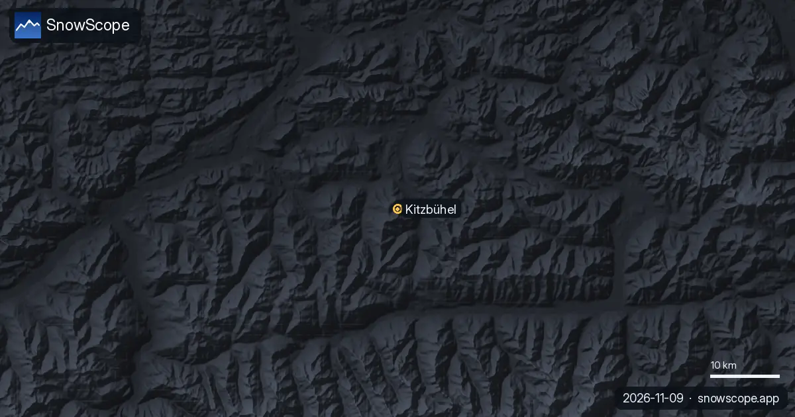

La nieve de Kitzbühel, sin adornos: una estación baja leída altura por altura, y cuándo reservar
Kitzbühel tiene uno de los grandes nombres del esquí y, a la vez, uno de los dominios más bajos entre las estaciones alpinas famosas. Las dos cosas son ciertas. Este artículo no vende la ciudad ni la critica: lee la nieve de 46 inviernos pasados de nuestro modelo a tres alturas y la convierte en una decisión de reserva.
Consulta la previsión de nieve en tiempo real de KitzSki en la app SnowScopeEspesor de nieve, alertas de nieve polvo y mapa 3D, gratis.
Primero, lo esencial
La ciudad está a 762 m. Los remontes que cartografiamos suben hasta unos 1.993 m, cerca del Kitzbüheler Horn, a 1.996 m. Son unos 1.230 m de desnivel, pero la mayor parte queda por debajo de las alturas donde la nieve es fiable en los Alpes orientales. KitzSki es grande, con 233 km de pistas y 57 teleféricos y remontes entre Kitzbühel, Kirchberg y Mittersill, así que la pregunta no es el terreno, sino la nieve.
Tres alturas, tres inviernos distintos
A 762 m, en el valle, un invierno típico de nuestro histórico llega solo a unos 30 cm, y hasta el más nevado de nuestros 46 inviernos se quedó en unos 56 cm. Lo habitual son unos 16 cm en enero y 20 cm en febrero. La nieve del valle es un extra, no un plan.
A 1.377 m, a media montaña, mejora: en un invierno típico unos 23 cm en diciembre, 39 cm en enero, 53 cm en febrero y 49 cm en marzo, con un máximo habitual de unos 65 cm. Aun así, ninguna semana de la temporada tuvo allí 50 cm en 9 de cada 10 inviernos.
A 1.993 m, cerca de la cima, es otro mundo: unos 74 cm en enero, 102 cm en febrero y 111 cm en marzo, con un máximo habitual de unos 134 cm y 12 semanas con al menos 50 cm en 9 de cada 10 inviernos. En la práctica, son los remontes altos los que sostienen unas vacaciones en Kitzbühel en un invierno pobre.
Lo que la Streif dice sobre las alturas
Kitzbühel organizó su primera carrera de esquí en 1894, y la Streif, en el Hahnenkamm, creada en 1937, está entre los descensos más difíciles del mundo. Su fama tiene poco que ver con la nieve natural profunda. Una pista de competición es una franja de hielo preparada; una semana de vacaciones depende de la nieve que hay alrededor, y esa es la parte que describen nuestras cifras.
Qué ha cambiado
Las laderas bajas son las que más han perdido. A 762 m el máximo mediano era de unos 34 cm en nuestros primeros quince inviernos desde 1980-81 y de unos 23 cm en los últimos quince, y los días con nieve en el suelo bajaron de unos 144 a 119. A 1.377 m el máximo bajó de unos 70 cm a unos 60 cm. Cerca de la cima el cambio es menor, de unos 144 cm a unos 134 cm. El invierno pasado, 2025-26, fue un aviso: el valle llegó a unos 14 cm y tuvo nieve en el suelo unos 50 días.
Entonces, ¿cuándo reservar?
Reserva entre finales de enero y mediados de marzo. La mejor semana a media montaña en nuestro histórico cae a principios de marzo, y aun así solo tuvo 50 cm en un 63 % de los inviernos, así que deja margen. Navidad y principios de diciembre son una apuesta por debajo de los remontes altos. Los principiantes tienen una ventaja: los 10 remontes de práctica del valle son gratuitos, lo que ayuda cuando tienen nieve. Antes de ir, comprueba los remontes en la web oficial y lee el boletín de aludes del Tirol si vas a salir de las pistas.
Consejos para esquiadores
- Organiza el esquí alrededor de los remontes altos: cerca de 1.993 m el máximo habitual es de unos 134 cm.
- De finales de enero a mediados de marzo es la ventana más segura; si puedes, deja fechas flexibles.
- La nieve del valle a 762 m es un extra, no un plan.
- Nieve en nuestro mapa no significa que una estación esté abierta: comprueba los remontes en la web oficial.
Referencias y créditos
- Wikipedia (en), 'Kitzbühel', consultada el 8 de noviembre de 2026: altura de la ciudad, Kitzbüheler Horn, primera carrera de 1894, Streif desde 1937. en.wikipedia.org/wiki/Kitzb%C3%BChel
- KitzSki, web oficial: 233 km de pistas, 57 teleféricos y remontes, remontes de práctica gratuitos en el valle, consultada el 8 de noviembre de 2026. www.kitzski.at/en/
- Avalanche.report, boletín oficial de aludes usado para el Tirol. avalanche.report/
Sobre estas cifras
Cifras de nieve: histórico de nieve de SnowScope, 46 inviernos pasados (1980-81 a 2025-26) a tres alturas de la estación, un modelo del pasado corregido por altitud (una estimación para una zona, no partes de la estación). Remontes, pistas y acceso: las fuentes de abajo, comprobadas en la fecha indicada.
Boletines oficiales de aludes: Avalanche.report – Euregio Tyrol
Citar este informe
Para investigación, docencia o prensa: cifras y gráficos reutilizables libremente bajo CC BY 4.0 con esta cita.
SnowScope (2026), La nieve de Kitzbühel, sin adornos: una estación baja leída altura por altura, y cuándo reservar, https://snowscope.app/blog/es/2026/11/kitzbuehel-snow-honestly-low-resort-when-to-book.html, consultado el 2026-11-09
SnowScope (Atlas Labs). (2026, November 9). La nieve de Kitzbühel, sin adornos: una estación baja leída altura por altura, y cuándo reservar. SnowScope snow reports. https://snowscope.app/blog/es/2026/11/kitzbuehel-snow-honestly-low-resort-when-to-book.html
BibTeX
@misc{snowscope2026kitzbuehelsnowhonestlylo,
author = {{SnowScope (Atlas Labs)}},
title = {La nieve de Kitzbühel, sin adornos: una estación baja leída altura por altura, y cuándo reservar},
year = {2026},
month = nov,
howpublished = {\url{https://snowscope.app/blog/es/2026/11/kitzbuehel-snow-honestly-low-resort-when-to-book.html}},
note = {Published 2026-11-09 20:17 UTC; accessed 2026-11-09}
}· CC BY 4.0 · Métodos, datos y herramientas →
KitzSki: nieve y temperatura según la altura, este invierno vs el pasado (herramientas) →